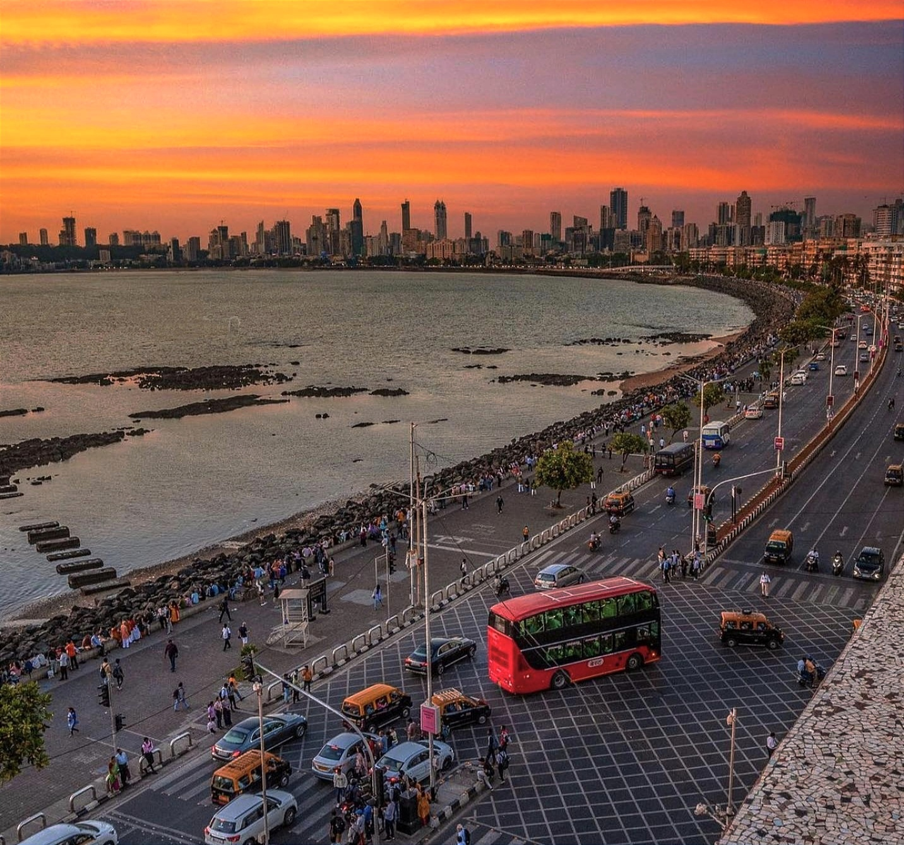

Juhu Beach
Juhu beach is the longest beach in Mumbai and the most popular among tourists as well. It is renowned for its wide variety of street food that has a typical Mumbai flavour and is sweet and sour. The surrounding area of Juhu is one of the poshest localities in Mumbai and is home to a lot of famous Bollywood and TV celebrities - the most famous being Amitabh Bachchan's bungalow - and it is not rare to spot a celebrity jogging on the beach.
Television shoots are often held and a number of toy-sellers, roasted corn vendors and acrobats attract the eye. While here, you may also visit the iconic ISKCON Temple which is meters away from the beach or watch a theatre performance at the famous Prithvi Cafe. Just taking walk across the beach sand can bring an infinite sense of calm. Although the beach was criticized for being unclean, efforts by BMC have significantly improved the scenery in the past few years.


Marine Drive
Marine Drive is the most easily identifiable landmark associated with Mumbai and is indicative of the glamor and glitter of the city. It is essentially 3.6 km long, arc-shaped boulevard along the South Mumbai coast that starts at the southern end of Nariman Point and ends at Girgaum Chowpatty, popularly known as Chowpatty Beach. The coast wraps the Arabian sea and is the best place in Mumbai to watch the sunset or even to just take a leisurely stroll by the sea any time of the day or night. At night, when the whole coastline lights up, it justifies its other moniker i.e. Queen's Necklace.
The whole curve of the coastline, shielded with palm trees makes for a spectacular view at night - you can go to either end of Marine Drive after sunset and see the lights glowing in a perfect arc all along the coast. People come to walk here in the evening to experience the brilliant sunset. It is also one of the places people visit late at night, and you will find vendors selling chai and cigarettes at all hours. The sound of the waves, a view of the Mumbai skyline and the starry sky easily make Marine Drive one of the most romantic spots in the city.

Elephant Caves
A UNESCO World Heritage Site, Elephanta Caves is a specimen of rock-cut art and architecture from the times of medieval India. The caves are located on the Elephanta or Gharapuri island which is situated at a distance of 11 km from the city of Mumbai. Natively known as Gharapurichi Leni, the Elephanta Caves that exist today are ruins of what were once elaborately painted artworks. It also provides an amazing view of the Mumbai skyline. You can reach the Elephanta Caves via a ferry ride from Gateway of India. This collection of cave temples dates back to 5th to 7th centuries and most of them are dedicated to Lord Shiva.
There are two groups of alcoves in the site of the Elephanta Caves, the first is a large group of five Hindu caves and the second one is a smaller group of two Buddhist caves. The Hindu caves contain the stone sculptures representing the Shaiva Hindu sect. The caves are an expression of art and a number of important imageries are sculpted here, which include 'Trimurti' or three-headed Shiva, 'Gangadhar' which is a manifestation of the river Ganga as she descends to the earth and 'Ardhnareshwar', which is a representation of Shiva and Parvati in the same body. In addition to being an important heritage site, the Elephanta Caves are also an unlikely trekking destination.
Coloba Causeway
One of the most exciting and eclectic places to visit in Mumbai is the Colaba Causeway, famous for being a shopper's paradise. Iconic at best, ask any Mumbaikar and they will tell you that the Causeway is pretty much the heart of Mumbai. Resurgent, even after the terror attack, this shopping street stood up on its feet in no time. Apart from gorgeous clothes and accessories, especially earrings, you can also find great bargains on home decor stuff such as lampshades, curios and antiques. If designer stuff is your calling, there are a number of options for that as well. If you do feel like catching a bite and a beer, there are a number of restaurants that offer great food and booze at very affordable prices and Cafe Leopold and Cafe Mondegar are pretty much the best!
Colaba Causeway acts as the land link between Colaba and the Old Woman's Island. It lies close to the Fort area which is a business sector and the heart of the city since the British era. From roadside vendors to glamorous boutiques, the street sells everything you can think of buying – in different quality and prices. Catch the old world movies charm at Regal Cinema. Behind Regal Cinema, the Causeway leads you to the Gateway of India overlooking the Arabian Sea. Here, the majestic Taj Mahal Palace Hotel dominates the city's skyline. Colaba Causeway is the heart of Mumbai and it's the liveliest you will ever see the city!

Gateway Of India
The Gateway of India is, without doubt, one of the most popular tourist hotspots of Mumbai. Sitting proudly on the Apollo Bunder, it overlooks the Arabian Sea. It is one of the defining monuments of the city of Mumbai and was built in the year 1924. The construction was undertaken by the famous architect George Wittet, to commemorate the visit of King George V and Queen Mary to Mumbai. The imposing structure of the monument is a beautiful confluence of Indian, Arabic and Western architecture and has become a popular tourist hub in the city. It is also the starting point of a number of ferry services that ply to the historic Elephanta Caves.
Nicknamed 'Mumbai's Taj Mahal', the foundation of this landmark was laid in 1911 and it was inaugurated 13 years later in 1924. The structure in itself is a made of yellow basalt and solid concrete and is embellished with numerous Muslim and Hindu motifs as well. The basalt arch of the Gateway served as the entry and exit access to India through waterways before independence and was the exit point from where the last British ship left India for England. There are statues of Swami Vivekananda and Chhatrapati Shivaji that have been installed near the Gateway as well. The view from the sea of the Gateway complex, especially at night is quite ethereal and beautiful. The Gateway of India is thus, not only a historic artefact but an example of marvellous architecture in itself!
Film City Mumbai
Spread across a vast area of 520 acres, the Film City is comprised of about twenty indoor studios and is located in Aarey Colony, Mumbai, Film City is often regarded as a home of Bollywood. The place is so vast that about 1000 film sets can be erected here simultaneously. Over the years, it has been the locations for a number of Bollywood films. Almost over 900 movies and many more television shows have also been shot here. Today, Film City has grown to be one of the best film studios, well-equipped with all the essential amenities and world-class facilities. Not only is it a great place for film shoots, but it is also filled with verdant greenery and refreshing expanses.
Built on the lines of the Film City of California, today it is considered as synonymous to Bollywood. There is no denying the enigma that filmmaking holds on every one of us, and Film City gives a chance to live out our dream with its various tours. Some excursions are organised in the premises of the Film City which are aimed at the different aspects of movie - making, which are open to all who wish to experience it. You can visit sets that depict foreign locations right here in Mumbai, or learn the nuances of acting at the live movie shoot tours. A land where it is difficult to differentiate between reality and dreams, Film City is a must visit for all movie buffs.
Prince of Wales Museum
The Prince of Wales Museum is a splendid structure situated in Mumbai and is regarded to be one of the heritage buildings of the city. The foundation stone of this edifice was laid down by the Prince of Wales on the 11 November 1905, and it was established as a museum on 10 January 1922. The facade of the museum is a sight to behold in itself and sits in the midst of an expansive green garden. Adorned with stunning stone and lattice work, the architecture of the Prince of Wales Museum is a blend of Indian, Mughal and British engineering styles. Inside, the museum holds almost 50,000 of some of the most exquisite artefacts relating to the rich and diverse history of India.
Now known as 'Chhatrapati Shivaji Maharaj Vastu Sangrahalay', The Prince of Wales Museum is a Grade I Heritage Building of the city and is counted amongst one of the most prominent museums of India. The complex exhibits a myriad collection of ancient artefacts, artwork and sculptors of the country which give a unique insight into our past. The building also underwent a major renovation after which several new galleries adorning the artworks of Hindu God Krishna, textiles and Indian traditional costumes were opened. Preserved in its best form, the Prince of Wales Museum is a wonderful manifestation of India's glory and rich past.

Essel World
One of the most famous and popular amusement parks in the country, Essel World is located in Gorai, close to the capital of Maharashtra, Mumbai. EsselWorld and Water Kingdom together make one of Asia's largest amusement parks. They expand over an area of 64 acres and are frequented by locals and non-locals from all age groups, especially kids. With some exciting rides and entertainment, Essel World and Water Kingdom are a favourite summer destination for many families. One can plan a day-long picnic or stay overnight at one of the hotels nearby to explore both the amusement parks. For tourists visiting the state capital, a visit to Essel World is a must. For many of the adults going to Essel World is synonymous with childlike enthusiasm and nostalgia.
The landscaped interiors of the amusement parks are what makes them popular. The amusement parks have also been featured in many TV serials and Bollywood movies. Essel World has also been awarded the National Award of Excellence, Most Innovative Promotional Activity and the Award for the Best Variety and Number of Rides by the Indian Association of Amusement Parks & Industries.

Siddhivinayak Temple
The Siddhivinayak Temple in the Prabhadevi area is a revered shrine dedicated to Lord Ganesha and is one of the most significant and frequented temples in Mumbai. This temple was built in the year 1801 by Laxman Vithu and Deubai Patil. The couple did not have any children of their own and decided to build the Siddhivinayak temple so as to fulfil the wishes of other infertile women. Interestingly, the statue of Lord Ganesha here is believed to be self-manifested and grants wishes.
The Temple has a small sanctum housing the idol of Shri Ganesha, which is about two and a half feet wide and made out of a single piece of black stone. The temple has attained a popular status not only because it is believed that the Ganesha in the temple is especially revered, but also because of its popularity with Film stars and the bigwigs of the industry. It is also the richest temple in Mumbai as it begets INR 100 Million in donations each year from devotees across the world.